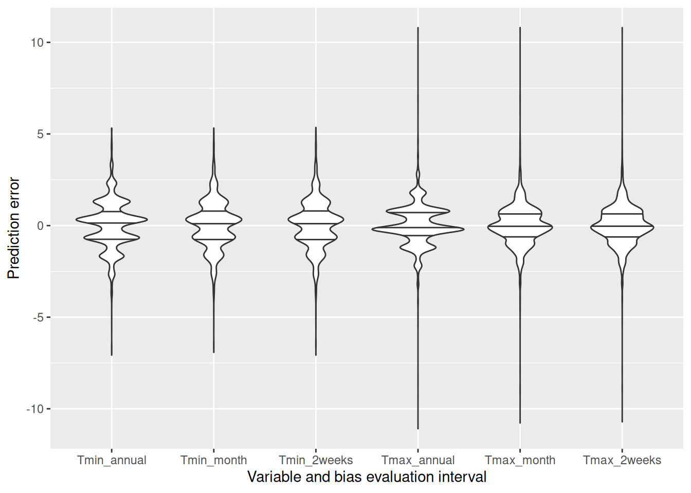

Chapter 11 Filling gaps in temperature records
Learning goals for this lesson
- see why having gaps in records can be quite problematic
- learn about (too?) simple ways to fill gaps in daily temperature records
- learn how to use data from auxiliary weather stations to fill gaps in daily temperature records
- learn about a creative way to close gaps in hourly temperature records
11.1 Gaps
There’s a lot of weather data out there, but most of it isn’t perfect. Lots of things can go wrong when recording temperature data, including malfunctioning equipment, flat batteries, power cuts or lack of maintenance. Data archiving, transmission and storage in a database presents the next hurdle. Many datasets therefore have gaps that can be very annoying when you’re trying to model agroclimatic conditions. Many scientific methods don’t deal very well with missing data. So we need ways of filling such gaps.
11.2 Filling short gaps in daily records
Weather records may be largely complete, except for isolated incidences of missing daily minimum or maximum temperatures. In such cases, we may get away with simple linear interpolation. This means, we take the last recorded value before a gaps and the first after the gap and compute the average. We can use equivalent procedures for slightly longer gaps (e.g. 2-3 days), and possibly even a few more (even though we should now be starting to feel a bit uneasy about this). Obviously, the longer the gaps, the more dubious this practice becomes. In case gaps extend to several weeks or even months, linear interpolation, which simply connects the start and end points of the gap by a straight line, may miss important features of the local temperature dynamics. In the extreme case, where we’re missing an entire year of data, such linear interpolation would miss entire seasons, producing unacceptable errors. Yet chillR has a function to implement such simple interpolation - interpolate_gaps().
library(chillR)
library(tidyverse)
weather <- KA_weather %>% make_all_day_table()
Tmin_int <- interpolate_gaps(weather[,"Tmin"])
weather <- weather %>% mutate(Tmin = Tmin_int$interp,
Tmin_interpolated = Tmin_int$missing)
Tmax_int <- interpolate_gaps(weather[,"Tmax"])
weather <- weather %>% mutate(Tmax = Tmax_int$interp,
Tmax_interpolated = Tmax_int$missing)The fix_weather() function in chillR uses the same procedure. If you run this without any additional arguments (just fix_weather(weather)), this function assumes you’re trying to linearly interpolate all gaps in the Tmin and Tmax columns. If entire days are missing in the records, new lines are added for these days (using the make_all_day_table() function). You can also specify the range of years to apply this procedure for (by specifying start_year and end_year), the dates to work on (start_date and end_date - these are in Julian days, i.e. days of the year) and the names of columns you want to work on (needed if these are different from Tmin and Tmax)
# add an extra day to the KA_weather dataset that is not connected to the days that are already there.
# this creates a large gap, which we can then interpolate
KA_weather_gap <- rbind(KA_weather, c(Year = 2011,
Month = 3,
Day = 3,
Tmax = 26,
Tmin = 14))
# fill in the gaps between Julian date 300 (late October) and 100 (early April), only returning data between 2000 and 2011
fixed_winter_days <- KA_weather_gap %>% fix_weather(start_year = 2000,
end_year = 2011,
start_date = 300,
end_date = 100)
# fill in all gaps
fixed_all_days <- KA_weather_gap %>% fix_weather()The fix_weather() function produces a list with two outputs:
weather: adata.framewith the interpolated weather data, now including columnsno_Tminandno_Tmax, which containTRUEfor rows where the respective values were originally missing (FALSEotherwise).QC: a quality control object that summarizes how many values were interpolated for each season.
Here’s how the QC elements look for the two interpolated datasets we just created:
| Season | End_year | Season_days | Data_days | Missing_Tmin | Missing_Tmax | Incomplete_days | Perc_complete |
|---|---|---|---|---|---|---|---|
| 1999/2000 | 2000 | 166 | 100 | 66 | 66 | 66 | 60.2 |
| 2000/2001 | 2001 | 167 | 167 | 0 | 0 | 0 | 100.0 |
| 2001/2002 | 2002 | 166 | 166 | 0 | 0 | 0 | 100.0 |
| 2002/2003 | 2003 | 166 | 166 | 0 | 0 | 0 | 100.0 |
| 2003/2004 | 2004 | 166 | 166 | 0 | 0 | 0 | 100.0 |
| 2004/2005 | 2005 | 167 | 167 | 0 | 0 | 0 | 100.0 |
| 2005/2006 | 2006 | 166 | 166 | 0 | 0 | 0 | 100.0 |
| 2006/2007 | 2007 | 166 | 166 | 0 | 0 | 0 | 100.0 |
| 2007/2008 | 2008 | 166 | 166 | 0 | 0 | 0 | 100.0 |
| 2008/2009 | 2009 | 167 | 167 | 0 | 0 | 0 | 100.0 |
| 2009/2010 | 2010 | 166 | 166 | 0 | 0 | 0 | 100.0 |
| 2010/2011 | 2011 | 166 | 128 | 165 | 165 | 165 | 0.6 |
| Season | End_year | Season_days | Data_days | Missing_Tmin | Missing_Tmax | Incomplete_days | Perc_complete |
|---|---|---|---|---|---|---|---|
| 1997/1998 | 1998 | 365 | 365 | 0 | 0 | 0 | 100.0 |
| 1998/1999 | 1999 | 365 | 365 | 0 | 0 | 0 | 100.0 |
| 1999/2000 | 2000 | 366 | 366 | 0 | 0 | 0 | 100.0 |
| 2000/2001 | 2001 | 365 | 365 | 0 | 0 | 0 | 100.0 |
| 2001/2002 | 2002 | 365 | 365 | 0 | 0 | 0 | 100.0 |
| 2002/2003 | 2003 | 365 | 365 | 0 | 0 | 0 | 100.0 |
| 2003/2004 | 2004 | 366 | 366 | 0 | 0 | 0 | 100.0 |
| 2004/2005 | 2005 | 365 | 365 | 0 | 0 | 0 | 100.0 |
| 2005/2006 | 2006 | 365 | 365 | 0 | 0 | 0 | 100.0 |
| 2006/2007 | 2007 | 365 | 365 | 0 | 0 | 0 | 100.0 |
| 2007/2008 | 2008 | 366 | 366 | 0 | 0 | 0 | 100.0 |
| 2008/2009 | 2009 | 365 | 365 | 0 | 0 | 0 | 100.0 |
| 2009/2010 | 2010 | 365 | 365 | 214 | 214 | 214 | 41.4 |
| 2010/2011 | 2011 | 365 | 62 | 364 | 364 | 364 | 0.3 |
As indicated above, linear interpolation is usually acceptable for short gaps in the records, but it gets increasingly less convincing, when the gaps are longer. Here’s a quick demonstration of this:
gap_weather <- KA_weather[200:305,]
gap_weather[,"Tmin_observed"] <- gap_weather$Tmin
gap_weather$Tmin[c(2,4:5,7:9,11:14,16:20,22:27,29:35,
37:44,46:54,56:65,67:77,79:90,92:104)] <- NA
fixed_gaps <- fix_weather(gap_weather)$weather
ggplot(data=fixed_gaps,
aes(DATE,Tmin_observed)) +
geom_line(lwd=1.3) +
xlab("Date") +
ylab("Daily minimum temperature (°C)") +
geom_line(data=fixed_gaps,aes(DATE,Tmin),col="red",lwd=1.3)The plot above shows the originally measured values in black and the interpolated values in red. To create gaps in the record for interpolation, I removed values from the original dataset, starting with gaps of length==1 on the left, and ending up with 13 missing values on the right. As you see, temperature dynamics are captured quite well on the left, but no longer very well on the right. Here’s how far off we are:
fixed_gaps[,"error"] <- abs(fixed_gaps$Tmin - fixed_gaps$Tmin_observed)
ggplot(data=fixed_gaps,
aes(DATE,error)) +
geom_line(lwd=1.3) +
xlab("Date") +
ylab("Error introduced by interpolation (°C)") +
geom_point(data=fixed_gaps[which(!fixed_gaps$no_Tmin),],
aes(DATE,error),col="red",cex=3)How big the errors get obviously depends on the nature of the dataset - was there a lot of variation during the period of interest, or not? Yet we see a tendency here of errors getting bigger and bigger with increasing gap sizes. Of course for the non-gap points (shown in red in the plot), the error is zero, but especially in the middle of the larger gaps, we can be quite far off from what actually happened.
For large gaps, we need a better procedure!
11.3 Filling long gaps in daily records
Long gaps in temperature records are a problem - and we can’t make this go away entirely. To stress the obvious again: We can’t know exactly what the temperatures were in a given location at a particular time, if nobody measured them. But we can make pretty good guesses. For short gaps, linear interpolation may be enough. We could now also experiment with more complex interpolation algorithms, but this is not the direction I want to take here. Instead, let’s try to look for additional data that can help us deal with this challenge.
We’ve already learned about one good source of temperature data, and of course there are lots of other records out there. Chances are that, unless we’re working way back in the past, or on a remote island, we can find another weather station that is close enough to be in a climatically comparable setting. Some researchers have identified such stations and then simply used the data from there to fill gaps for the site of interest. This (as far as I understand it) is the preferred way of dealing with gaps in records in the CIMIS network in California (at least this used to be the default option on their website).
This may work ok, if the auxiliary station is in a very similar climatic setting, but it will already introduce an error if we’re dealing with some elevation differences, or with other landscape features that have climatic effects (e.g. lakes, sea, forest). Such features, as well as topography, can modulate temperatures at a particular place in a way that makes them poor proxies of temperatures in another location.
chillR contains a function, patch_weather(), that can fill gaps in a weather record based on a list of weather datasets from auxiliary stations. This function can test for (some) biases, correct data for bias in mean temperatures, and use the result to fill gaps in the record for the location of interest.
Let’s try to fill gaps in the dataset for Bonn that we downloaded in the Getting temperature data lesson.
| Season | End_year | Season_days | Data_days | Missing_Tmin | Missing_Tmax | Incomplete_days | Perc_complete |
|---|---|---|---|---|---|---|---|
| 1989/1990 | 1990 | 365 | 365 | 0 | 0 | 0 | 100.0 |
| 1990/1991 | 1991 | 365 | 365 | 0 | 0 | 0 | 100.0 |
| 1991/1992 | 1992 | 366 | 366 | 0 | 0 | 0 | 100.0 |
| 1992/1993 | 1993 | 365 | 365 | 0 | 0 | 0 | 100.0 |
| 1993/1994 | 1994 | 365 | 365 | 0 | 0 | 0 | 100.0 |
| 1994/1995 | 1995 | 365 | 365 | 0 | 0 | 0 | 100.0 |
| 1995/1996 | 1996 | 366 | 366 | 0 | 0 | 0 | 100.0 |
| 1996/1997 | 1997 | 365 | 365 | 0 | 0 | 0 | 100.0 |
| 1997/1998 | 1998 | 365 | 365 | 4 | 4 | 4 | 98.9 |
| 1998/1999 | 1999 | 365 | 365 | 365 | 365 | 365 | 0.0 |
| 1999/2000 | 2000 | 366 | 366 | 366 | 366 | 366 | 0.0 |
| 2000/2001 | 2001 | 365 | 365 | 365 | 365 | 365 | 0.0 |
| 2001/2002 | 2002 | 365 | 365 | 365 | 365 | 365 | 0.0 |
| 2002/2003 | 2003 | 365 | 365 | 316 | 316 | 316 | 13.4 |
| 2003/2004 | 2004 | 366 | 366 | 366 | 366 | 366 | 0.0 |
| 2004/2005 | 2005 | 365 | 365 | 0 | 0 | 0 | 100.0 |
| 2005/2006 | 2006 | 365 | 365 | 0 | 0 | 0 | 100.0 |
| 2006/2007 | 2007 | 365 | 365 | 0 | 0 | 0 | 100.0 |
| 2007/2008 | 2008 | 366 | 366 | 0 | 0 | 0 | 100.0 |
| 2008/2009 | 2009 | 365 | 365 | 0 | 0 | 0 | 100.0 |
| 2009/2010 | 2010 | 365 | 365 | 0 | 0 | 0 | 100.0 |
| 2010/2011 | 2011 | 365 | 365 | 0 | 0 | 0 | 100.0 |
| 2011/2012 | 2012 | 366 | 366 | 0 | 0 | 0 | 100.0 |
| 2012/2013 | 2013 | 365 | 365 | 0 | 0 | 0 | 100.0 |
| 2013/2014 | 2014 | 365 | 365 | 0 | 0 | 0 | 100.0 |
| 2014/2015 | 2015 | 365 | 365 | 0 | 0 | 0 | 100.0 |
| 2015/2016 | 2016 | 366 | 366 | 0 | 0 | 0 | 100.0 |
| 2016/2017 | 2017 | 365 | 365 | 0 | 0 | 0 | 100.0 |
| 2017/2018 | 2018 | 365 | 365 | 0 | 0 | 0 | 100.0 |
| 2018/2019 | 2019 | 365 | 365 | 0 | 0 | 0 | 100.0 |
| 2019/2020 | 2020 | 366 | 366 | 0 | 0 | 0 | 100.0 |
As you see, this dataset has substantial gaps between 1998 and 2004 and in 2008 (almost all values missing), and some shorter gaps in 2015, 2018 and 2020.
We’ll now need data from other weather stations in the neighborhood. To find them, we can again use the handle_gsod() function:
station_list <- handle_gsod(action="list_stations",
location=c(7.10,50.73),
time_interval=c(1990,2020))| chillR_code | STATION.NAME | CTRY | Lat | Long | BEGIN | END | Distance | Overlap_years | Perc_interval_covered |
|---|---|---|---|---|---|---|---|---|---|
| 10517099999 | BONN/FRIESDORF(AUT) | GM | 50.700 | 7.150 | 19360102 | 19921231 | 4.86 | 3.00 | 10 |
| 10518099999 | BONN-HARDTHOEHE | GM | 50.700 | 7.033 | 19750523 | 19971223 | 5.79 | 7.98 | 26 |
| 10519099999 | BONN-ROLEBER | GM | 50.733 | 7.200 | 20010705 | 20081231 | 7.07 | 7.49 | 24 |
| 10513099999 | KOLN BONN | GM | 50.866 | 7.143 | 19310101 | 20230729 | 15.43 | 31.00 | 100 |
| 10509099999 | BUTZWEILERHOF(BAFB) | GM | 50.983 | 6.900 | 19780901 | 19950823 | 31.47 | 5.64 | 18 |
| 10502099999 | NORVENICH | GM | 50.831 | 6.658 | 19730101 | 20230729 | 33.14 | 31.00 | 100 |
| 10514099999 | MENDIG | GM | 50.366 | 7.315 | 19730102 | 19971231 | 43.26 | 8.00 | 26 |
| 10506099999 | NUERBURG-BARWEILER | GM | 50.367 | 6.867 | 19950401 | 19971231 | 43.63 | 2.75 | 9 |
| 10508099999 | BLANKENHEIM | GM | 50.450 | 6.650 | 19781002 | 19840504 | 44.56 | 0.00 | 0 |
| 10510099999 | NUERBURG | GM | 50.333 | 6.950 | 19300901 | 19921231 | 45.42 | 3.00 | 10 |
| 10515099999 | BENDORF | GM | 50.417 | 7.583 | 19310102 | 20030816 | 48.82 | 13.62 | 44 |
| 10504099999 | EIFEL | GM | 50.650 | 6.283 | 20040501 | 20040501 | 58.41 | 0.00 | 0 |
| 10526099999 | BAD MARIENBERG | GM | 50.667 | 7.967 | 19730101 | 20030816 | 61.65 | 13.62 | 44 |
| 10613099999 | BUCHEL | GM | 50.174 | 7.063 | 19730101 | 20230729 | 61.90 | 31.00 | 100 |
| 10503099999 | AACHEN/MERZBRUCK | GM | 50.817 | 6.183 | 19780901 | 19971212 | 65.40 | 7.95 | 26 |
| 10419099999 | LUDENSCHEID & | GM | 51.233 | 7.600 | 19270906 | 20030306 | 66.06 | 13.18 | 43 |
| 10400099999 | DUSSELDORF | GM | 51.289 | 6.767 | 19310102 | 20230729 | 66.43 | 31.00 | 100 |
| 10616299999 | SIEGERLAND | GM | 50.708 | 8.083 | 20040510 | 20230729 | 69.46 | 16.65 | 54 |
| 10418099999 | LUEDENSCHEID | GM | 51.250 | 7.650 | 19940301 | 19971231 | 69.55 | 3.84 | 12 |
| 10437499999 | MONCHENGLADBACH | GM | 51.230 | 6.504 | 19960715 | 20230729 | 69.61 | 24.47 | 79 |
| 10403099999 | MOENCHENGLADBACH | GM | 51.233 | 6.500 | 19381001 | 19421031 | 70.05 | 0.00 | 0 |
| 10501099999 | AACHEN | GM | 50.783 | 6.100 | 19280101 | 20030816 | 70.81 | 13.62 | 44 |
| 6496099999 | ELSENBORN (MIL) | BE | 50.467 | 6.183 | 19840501 | 20230729 | 71.21 | 31.00 | 100 |
| 10409099999 | ESSEN/MUELHEIM | GM | 51.400 | 6.967 | 19300414 | 19431231 | 75.12 | 0.00 | 0 |
| 10410099999 | ESSEN/MULHEIM | GM | 51.400 | 6.967 | 19310101 | 20220408 | 75.12 | 31.00 | 100 |
We can see that many of the listed stations aren’t very useful for us, because they only overlap with the record we already have for a few years, in some cases not at all. So it’s quite possible that none of these stations can help us fill all the gaps in the temperature data for Bonn. But maybe we can combine data from multiple auxiliary stations to close all the gaps. Stations that look promising are BONN-HARDTHOEHE, BONN-ROLEBER, and NORVENICH. So let’s download these and store them in a list.
As of chillR version 0.74, the handle_gsod function can download multiple files at ones, returning a named list of station records. Let’s use this function to download the records for the stations of interest (positions 2, 3 and 6 in the station_list).
patch_weather<-
handle_gsod(action = "download_weather",
location = as.character(station_list$chillR_code[c(2,3,6)]),
time_interval = c(1990,2020)) %>%
handle_gsod()Now we have a list of weather records that are potentially useful for filling gaps in our record for Bonn. We can now use the patch_daily_temperatures() function to implement this.
You can take a look at what happened by looking at the statistics element of the patched object (call patched$statistics):
| mean_bias | stdev_bias | filled | gaps_remain | |
|---|---|---|---|---|
| Tmin | -0.307 | 1.304 | 2146 | 1 |
| Tmax | 0.202 | 1.154 | 2146 | 1 |
| mean_bias | stdev_bias | filled | gaps_remain | |
|---|---|---|---|---|
| Tmin | -1.871 | 2.080 | 0 | 1 |
| Tmax | 1.466 | 1.427 | 0 | 1 |
| mean_bias | stdev_bias | filled | gaps_remain | |
|---|---|---|---|---|
| Tmin | -0.546 | 1.186 | 0 | 1 |
| Tmax | 1.314 | 1.089 | 0 | 1 |
Here we see an analysis of how similar the temperature records (separately for Tmin and Tmax) were between each auxiliary station and our station of interest in Bonn, based on days for which both stations had data. Besides the number of days for which information was taken from each auxiliary station (filled) and the number of gaps that remained afterwards (gaps_remain), we see two quality statistics:
- the mean bias (
mean_bias), i.e. the mean temperature difference. - the standard deviation of the daily differences (
stdev_bias).
The mean_bias is easy to address by adding or subtracting the respective value, when we transfer daily temperature values from one station to the other. The patch_daily_temperatures() function does that for us automatically. We may still want to set some limit to how much we can accept here, but in principle, this can be addressed. What is more problematic is the stdev_bias metric. This basically indicates the extent of additional (possibly unsystematic) differences between stations. I don’t know if this can be adjusted (I haven’t figured it out yet), so for now we should treat this as an exclusion criterion (i.e. if stdev_bias is above a certain value, we reject the station). Let’s set some limits for both metrics, which we can pass as arguments to patch_daily_temperatures() (using the max_mean_bias and max_stdev_bias parameters). Let’s cap the mean_bias at 1 °C and the stdev_bias at 2°C, and then look at the statistics again.
patched <- patch_daily_temperatures(weather = Bonn,
patch_weather = patch_weather,
max_mean_bias = 1,
max_stdev_bias = 2)| mean_bias | stdev_bias | filled | gaps_remain | |
|---|---|---|---|---|
| Tmin | -0.307 | 1.304 | 2146 | 1 |
| Tmax | 0.202 | 1.154 | 2146 | 1 |
| mean_bias | stdev_bias | filled | gaps_remain | |
|---|---|---|---|---|
| Tmin | -1.871 | 2.080 | 0 | 1 |
| Tmax | 1.466 | 1.427 | 0 | 1 |
| mean_bias | stdev_bias | filled | gaps_remain | |
|---|---|---|---|---|
| Tmin | -0.546 | 1.186 | 0 | 1 |
| Tmax | 1.314 | 1.089 | 0 | 1 |
We can see that all records from BONN-HARDTHOEHE, as well as the Tmax records from BONN-ROLEBER were rejected, because they didn’t pass our mean_bias filter. Still, since the data from NORVENICH are pretty good, we were able to fill 2146 gaps for Tmin and 2146 for Tmax. Only 1 and 1 gaps remain for Tmin and Tmax, respectively.
Let’s use the fix_weather() function to take a look at where the remaining gaps are:
| Season | End_year | Season_days | Data_days | Missing_Tmin | Missing_Tmax | Incomplete_days | Perc_complete |
|---|---|---|---|---|---|---|---|
| 1989/1990 | 1990 | 365 | 365 | 0 | 0 | 0 | 100.0 |
| 1990/1991 | 1991 | 365 | 365 | 0 | 0 | 0 | 100.0 |
| 1991/1992 | 1992 | 366 | 366 | 0 | 0 | 0 | 100.0 |
| 1992/1993 | 1993 | 365 | 365 | 0 | 0 | 0 | 100.0 |
| 1993/1994 | 1994 | 365 | 365 | 0 | 0 | 0 | 100.0 |
| 1994/1995 | 1995 | 365 | 365 | 0 | 0 | 0 | 100.0 |
| 1995/1996 | 1996 | 366 | 366 | 0 | 0 | 0 | 100.0 |
| 1996/1997 | 1997 | 365 | 365 | 0 | 0 | 0 | 100.0 |
| 1997/1998 | 1998 | 365 | 365 | 0 | 0 | 0 | 100.0 |
| 1998/1999 | 1999 | 365 | 365 | 1 | 1 | 1 | 99.7 |
| 1999/2000 | 2000 | 366 | 366 | 0 | 0 | 0 | 100.0 |
| 2000/2001 | 2001 | 365 | 365 | 0 | 0 | 0 | 100.0 |
| 2001/2002 | 2002 | 365 | 365 | 0 | 0 | 0 | 100.0 |
| 2002/2003 | 2003 | 365 | 365 | 0 | 0 | 0 | 100.0 |
| 2003/2004 | 2004 | 366 | 366 | 0 | 0 | 0 | 100.0 |
| 2004/2005 | 2005 | 365 | 365 | 0 | 0 | 0 | 100.0 |
| 2005/2006 | 2006 | 365 | 365 | 0 | 0 | 0 | 100.0 |
| 2006/2007 | 2007 | 365 | 365 | 0 | 0 | 0 | 100.0 |
| 2007/2008 | 2008 | 366 | 366 | 0 | 0 | 0 | 100.0 |
| 2008/2009 | 2009 | 365 | 365 | 0 | 0 | 0 | 100.0 |
| 2009/2010 | 2010 | 365 | 365 | 0 | 0 | 0 | 100.0 |
| 2010/2011 | 2011 | 365 | 365 | 0 | 0 | 0 | 100.0 |
| 2011/2012 | 2012 | 366 | 366 | 0 | 0 | 0 | 100.0 |
| 2012/2013 | 2013 | 365 | 365 | 0 | 0 | 0 | 100.0 |
| 2013/2014 | 2014 | 365 | 365 | 0 | 0 | 0 | 100.0 |
| 2014/2015 | 2015 | 365 | 365 | 0 | 0 | 0 | 100.0 |
| 2015/2016 | 2016 | 366 | 366 | 0 | 0 | 0 | 100.0 |
| 2016/2017 | 2017 | 365 | 365 | 0 | 0 | 0 | 100.0 |
| 2017/2018 | 2018 | 365 | 365 | 0 | 0 | 0 | 100.0 |
| 2018/2019 | 2019 | 365 | 365 | 0 | 0 | 0 | 100.0 |
| 2019/2020 | 2020 | 366 | 366 | 0 | 0 | 0 | 100.0 |
We can see that we managed to fill almost all gaps, with only data for 1 day missing after the patching. It seems safe to use linear interpolation for such a short gap. The fix_weather() function can do this for us.
11.3.1 Bias-correction for shorter intervals
In the patch_daily_temperatures function, the bias correction is based on the average difference between the temperatures of a pair of weather stations over the entire year. It is possible, however, that the between-station bias varies throughout the year. We may then find that a particular station is a useful data source for temperatures in certain seasons but not in others. If we allow for different bias corrections during different parts of the year, we may also find that we can get better approximations, i.e. smaller biases than if we look at the entire year.
The patch_daily_temps (not ...temperatures) function allows us to do this. As a default, it evaluates temperature records on a monthly basis, i.e. it makes separate between-station comparisons for the temperatures of each calendar month. It can then take separate decisions on whether a potential auxiliary station is a useful proxy for temperatures in this monthly interval, and it can apply month-specific bias correction.
patched_monthly <- patch_daily_temps(weather = Bonn,
patch_weather = patch_weather,
max_mean_bias = 1,
max_stdev_bias = 2,
time_interval = "month")Here’s the finding for minimum temperatures for the NORVENICH station.
| Interval | Total_days | Overlap_days | Mean_bias | Stdev_bias | Gaps_before | Filled | Gaps_remain |
|---|---|---|---|---|---|---|---|
| 1 | 961 | 773 | 0.184 | 1.260 | 186 | 185 | 1 |
| 2 | 961 | 774 | 0.281 | 1.242 | 186 | 186 | 0 |
| 3 | 876 | 706 | 0.269 | 1.248 | 170 | 170 | 0 |
| 4 | 961 | 775 | 0.253 | 1.427 | 186 | 186 | 0 |
| 5 | 930 | 758 | 0.509 | 1.431 | 166 | 166 | 0 |
| 6 | 961 | 801 | 0.373 | 1.238 | 158 | 158 | 0 |
| 7 | 930 | 749 | 0.396 | 1.210 | 180 | 180 | 0 |
| 8 | 961 | 781 | 0.480 | 1.305 | 179 | 179 | 0 |
| 9 | 961 | 774 | 0.529 | 1.302 | 186 | 186 | 0 |
| 10 | 930 | 750 | 0.205 | 1.264 | 180 | 180 | 0 |
| 11 | 961 | 775 | 0.098 | 1.307 | 186 | 186 | 0 |
| 12 | 930 | 745 | 0.101 | 1.308 | 184 | 184 | 0 |
We now see that the mean bias really varies quite a bit, so that we probably benefit from a month-specific bias correction.
The time_interval parameter of the patch_daily_temps function allows us to specify the interval we want to use. Intervals can be month or week but also multiples of these, such as 10 days or 2 weeks. Note that the function will start counting these intervals on 1st January in each year. This may lead to intervals at the end of the year that are smaller than the interval you selected (this generates warnings, as you can see below). Note also that the smaller these intervals get, the less data can be used for determining the bias. Especially for short time series, a very short interval may therefore not be desirable.
patched_2weeks <- patch_daily_temps(weather = Bonn,
patch_weather = patch_weather,
max_mean_bias = 1,
max_stdev_bias = 2,
time_interval = "2 weeks")## Warning in patch_daily_temps(weather = Bonn, patch_weather = patch_weather, :
## The number of days in the last interval is often a lot smaller than in other
## intervals. Consider changing the time interval.
## Warning in patch_daily_temps(weather = Bonn, patch_weather = patch_weather, :
## The number of days in the last interval is often a lot smaller than in other
## intervals. Consider changing the time interval.
## Warning in patch_daily_temps(weather = Bonn, patch_weather = patch_weather, :
## The number of days in the last interval is often a lot smaller than in other
## intervals. Consider changing the time interval.To illustrate the effects of this, let’s create 5000 gaps in the Bonn weather record and fill them with proxy data using annual, monthly and bi-weekly intervals for the bias evaluation. We can plot the resulting errors with ggplot2 using a violin plot.
Gaps <- sample(seq(1:nrow(Bonn)), size = 5000, replace = FALSE)
Bonn_gaps <- Bonn %>% mutate(obs_Tmin=Tmin,
obs_Tmax=Tmax)
Bonn_gaps$Tmin[Gaps] <- NA
Bonn_gaps$Tmax[Gaps] <- NA
patch_annual <- patch_daily_temps(weather = Bonn_gaps,
patch_weather = patch_weather,
max_mean_bias = 1,
max_stdev_bias = 2,
time_interval = "year")
patch_month <- patch_daily_temps(weather = Bonn_gaps,
patch_weather = patch_weather,
max_mean_bias = 1,
max_stdev_bias = 2,
time_interval = "month")
patch_2weeks <- patch_daily_temps(weather = Bonn_gaps,
patch_weather = patch_weather,
max_mean_bias = 1,
max_stdev_bias = 2,
time_interval = "2 weeks")
Bonn_gaps[,"Tmin_annual"] <- Bonn_gaps$obs_Tmin - patch_annual$weather$Tmin
Bonn_gaps[,"Tmax_annual"] <- Bonn_gaps$obs_Tmax - patch_annual$weather$Tmax
Bonn_gaps[,"Tmin_month"] <- Bonn_gaps$obs_Tmin - patch_month$weather$Tmin
Bonn_gaps[,"Tmax_month"] <- Bonn_gaps$obs_Tmax - patch_month$weather$Tmax
Bonn_gaps[,"Tmin_2weeks"] <- Bonn_gaps$obs_Tmin - patch_2weeks$weather$Tmin
Bonn_gaps[,"Tmax_2weeks"] <- Bonn_gaps$obs_Tmax - patch_2weeks$weather$Tmax
Interval_eval <- Bonn_gaps %>%
filter(is.na(Tmin)) %>%
pivot_longer(Tmin_annual:Tmax_2weeks) %>%
mutate(Type=factor(name,
levels = c("Tmin_annual",
"Tmin_month",
"Tmin_2weeks",
"Tmax_annual",
"Tmax_month",
"Tmax_2weeks")) )
ggplot(Interval_eval,
aes(Type,value)) +
geom_violin(draw_quantiles = c(0.25,0.5,0.75)) +
xlab("Variable and bias evaluation interval") +
ylab("Prediction error")
We can also evaluate the mean daily error.
error_eval <-
data.frame(Variable = c(rep("Tmin",3),rep("Tmax",3)),
Interval = rep(c("Year","Month","Two weeks"),2),
Error = c(
mean(abs(Bonn_gaps$Tmin_annual[is.na(Bonn_gaps$Tmin)]),na.rm=TRUE),
mean(abs(Bonn_gaps$Tmin_month[is.na(Bonn_gaps$Tmin)]),na.rm=TRUE),
mean(abs(Bonn_gaps$Tmin_2weeks[is.na(Bonn_gaps$Tmin)]),na.rm=TRUE),
mean(abs(Bonn_gaps$Tmax_annual[is.na(Bonn_gaps$Tmin)]),na.rm=TRUE),
mean(abs(Bonn_gaps$Tmax_month[is.na(Bonn_gaps$Tmin)]),na.rm=TRUE),
mean(abs(Bonn_gaps$Tmax_2weeks[is.na(Bonn_gaps$Tmin)]),na.rm=TRUE))
)| Variable | Interval | Error |
|---|---|---|
| Tmin | Year | 1.0051829 |
| Tmin | Month | 0.9977331 |
| Tmin | Two weeks | 1.0006110 |
| Tmax | Year | 0.8260267 |
| Tmax | Month | 0.8030568 |
| Tmax | Two weeks | 0.8058152 |
As cou can see, the improvement wasn’t very impressive here, possibly because the stations we used are quite close to each other and the weather doesn’t differ much between them.
11.3.2 Saving the data for later
Now we should make sure that we save one of these files for later. I’ll choose the dataset where we based the bias correction on monthly intervals. We still need to interpolate the one missing day, before we can save this.
Now we have a fairly convincing long-term record (from 1990 to 2020) for Bonn, with no more gaps remaining. Let’s save this now.
Note that I only saved the weather element. This is a data.frame that can easily be saved as a spreadsheet table (.csv file). We can also save lists (including the QC element in this case), but that’s a bit more complicated, so let’s save this for later.
11.4 Filling gaps in hourly records
When it comes to gaps, hourly records are a lot harder to handle, because linear interpolation usually isn’t an option. This works for very short gaps only, but it’s probably quite obvious that for gaps that extend over multiple days, you can’t just connect the start and end points with a straight line. This makes it very hard to make use of hourly records, even when they are available. Since I’ve come across this problem a few times, I thought of a procedure that can do this (Luedeling, 2018).
Sometimes we have actual records of hourly temperatures. While this is preferable, in principle, to deriving hourly data from daily records, it may cause problems when the record isn’t complete. An example of such a record is the Winters_hours_gaps dataset contained in chillR. Such situations arise quite often, because temperature loggers can temporarily fail for many reasons. Let’s first look at what happens if we simply use linear interpolation:
In this interpolation, some daytime or nighttime cycles were missed entirely, which can lead to substantial errors when calculating agroclimatic metrics, such as chill or heat stress, that are of particular concern during the warmest and coolest parts of the day.
chillR’s interpolate_gaps_hourly() function provides an algorithm that can produce credible and continuous hourly records from such a patchy dataset. It combines several of the elements described above, but also adds functionality to derive daily temperature extremes from hourly data that were recorded. Without going into too much detail, here is the rough mode of operation:
Express temperatures for each hour as a function of daily temperature extremes using the functions of Linvill (1990). According to this idealized curve, all hourly temperatures can be expressed as a function of Tmin and Tmax on the previous, same or next day of the temperature record (depending on which hour is of interest). For a day with a complete record, 24 equations can be set up.
For each daily temperature extreme, empirically solve the system of all equations that contain the respective Tmin or Tmax variable (this is only attempted, when a minimum of 5 equations are available, to avoid spurious results).
Close gaps in the resulting dataset of daily Tmin and Tmax using data from proxy stations or, as a last resort, linear interpolation.
Compute idealized temperature curves from the now continuous record of daily Tmin and Tmax values.
Calculate the difference between recorded temperatures and this idealized curve.
Linearly interpolate this difference and add then result to the idealized temperature curve.
The following code calls this function for the Winters dataset, using daily data from a nearby station of the California Irrigation Management Information System (CIMIS) as a proxy. This is retrieved with the handle_cimis() function, which works similarly to the handle_gsod() function described above. Note that the CIMIS database seems to have occasional connectivity problems, and they’ve at least once made changes to their data storage system that required changes to the handle_cimis function. So it’s possible that the process times out or returns an error.
stations <- handle_cimis("list_stations",
location = c(-122,38.5))
downloaded_winters <- handle_cimis("download_weather",
stations$chillR_code[2],
time_interval = c(2008,2008))
winters_daily <- handle_cimis(downloaded_winters)$weatherHere’s what the dataset looks like:
| Year | Month | Day | Tmin | Tmax | Tmean | Prec |
|---|---|---|---|---|---|---|
| 2008 | 1 | 1 | NA | NA | NA | NA |
| 2008 | 1 | 2 | -1.7 | 13.6 | 5.0 | 0.0 |
| 2008 | 1 | 3 | 1.5 | 12.2 | 6.9 | 12.0 |
| 2008 | 1 | 4 | 8.0 | 11.0 | 9.2 | 132.8 |
| 2008 | 1 | 5 | 5.3 | 9.5 | 7.2 | 10.3 |
And here is the call of the interpolate_gaps_hourly() function:
to_interp <- Winters_hours_gaps
to_interp[,"Temp_recorded"] <- to_interp[,"Temp"]
to_interp[,"Temp"] <- to_interp[,"Temp_gaps"]
interp <- interpolate_gaps_hourly(hourtemps = to_interp,
latitude = 38.5,
daily_temps = list(Winters=winters_daily))The resulting dataset has two elements: $weather and daily_patch_report. Let’s first look at the daily_patch_report element:
| Var | Proxy | mean_bias | stdev_bias | filled | gaps_remain |
|---|---|---|---|---|---|
| Tmin | solved | NA | NA | 193 | 61 |
| Tmin | Winters | 0.282 | 1.908 | 61 | 0 |
| Tmin | interpolated | NA | NA | 0 | 0 |
| Tmax | solved | NA | NA | 204 | 50 |
| Tmax | Winters | -1.835 | 2.393 | 50 | 0 |
| Tmax | interpolated | NA | NA | 0 | 0 |
This table contains information on how many gaps in the daily record were filled by solving the system of hourly equations (‘solved’), how many Tmin and Tmax values were derived from proxy stations (listed by name, if names were provided in the call to interpolate_gaps_hourly; otherwise as station_x), and how many were filled by linear interpolation (this option can be turned off using the interpolate_remaining parameter). For proxy stations, it also provides the bias in mean Tmin and Tmax, which has been corrected, as well as the bias in the standard deviation of Tmin and Tmax (which was not corrected).
The $weather element of the interpolation result contains the table of interpolated temperatures.
| Year | Month | Day | Hour | interpolated | Tmax_source |
|---|---|---|---|---|---|
| 2008 | 3 | 4 | 15 | 21.86700 | NA |
| 2008 | 3 | 4 | 16 | 21.60400 | NA |
| 2008 | 3 | 4 | 17 | 20.07900 | NA |
| 2008 | 3 | 4 | 18 | 17.34400 | NA |
| 2008 | 3 | 4 | 19 | 13.93000 | NA |
| 2008 | 3 | 4 | 20 | 11.92900 | NA |
| 2008 | 3 | 4 | 21 | 11.84718 | solved |
| 2008 | 3 | 4 | 22 | 11.76536 | solved |
| 2008 | 3 | 4 | 23 | 11.68355 | solved |
| 2008 | 3 | 5 | 0 | 11.60173 | solved |
| 2008 | 3 | 5 | 1 | 11.51991 | solved |
| 2008 | 3 | 5 | 2 | 11.43809 | solved |
| 2008 | 3 | 5 | 3 | 11.35627 | solved |
| 2008 | 3 | 5 | 4 | 11.27445 | solved |
| 2008 | 3 | 5 | 5 | 11.19264 | solved |
| 2008 | 3 | 5 | 6 | 11.11082 | solved |
Here’s a plot of part of the data:
This illustration shows that the interpolate_gaps_hourly() function produced a pretty good approximation (red lines) to the actual temperatures (gray line).
11.4.1 Accuracy assessment
Since the actual hourly temperatures are known, we can evaluate the accuracy of the predictions produced by the various interpolation methods. A common measure for validating predictions is the Root Mean Square Error of the Prediction (RMSEP):
\[RMSEP=\sqrt{\frac{\sum_{i=1}^n(\hat{y}_i-y_i)^2}{n}}\], with \(\hat{y}_i\) being the observed values, \(y_i\) the predicted values, and \(n\) the number of values.
The RMSEP provides an indication of how far each predicted value deviates, on average, from the actual values. It is, however, quite difficult to interpret RMSEP values alone, because whether they indicate a good or poor model fit depends on how variable the actual values are. For instance, an RMSEP of 5 days for a phenology model (which is close to, but not quite the same as a mean error of 5 days), could indicate a very good model, if observed dates vary by several weeks or months (e.g. for bloom dates of deciduous trees), but a terrible model, if the phenological stage of interest occurs on the same day every year (e.g. the ‘phenological’ event of candles lighting up on ‘festive indoor conifers’).
This is why it makes sense to include in such accuracy assessment the variation in observed values. This can be achieved by dividing the standard deviation of the observed data by the RMSEP to calculate the Residual Prediction Deviation (RPD):
\[RPD=\frac{sd_y}{RMSEP}\] This equation contains the RMSEP as computed above as well as the standard deviation of the observed values from their mean, defined as
\[sd_y=\sqrt{\frac{\sum_{i=1}^n(y_i-\bar{y})^2}{n-1}}\]
, with \(\bar{y}\) being the mean over all observations.
The RPD is more useful than the RMSEP, but its use of the standard deviation can be a problem, when actual values of \(y\) aren’t normally distributed (then the standard deviation can be a poor measure of variation). A more robust approach is use the interquartile range instead of the standard deviation. This metric is called the Ratio of Performance to InterQuartile distance (RPIQ):
\[RPIQ=\frac{IQ}{RMSEP}\]
IQ is calculated by subtracting the 75th percentile of the distribution of all \(y\) from the 25th percentile.
The RPIQ score is a bit harder to evaluate than the RMSEP, with different quality thresholds in use and a very high context dependency. Quite commonly, values above 2 are considered ‘good’ or even ‘excellent’, though some studies use substantially higher thresholds (up to 8 for excellence).
Since the RPIQ makes no assumption about the distribution of \(y\), let’s use this for assessing the accuracy of the various interpolation methods. We have a total of four methods to evaluate:
- idealized temperature curves from daily records of Tmin and Tmax, based on records from a nearby weather station
- idealized temperature curves from daily records of Tmin and Tmax, based on records from the same location
- linear interpolation of hourly temperatures
- interpolation of hourly temperatures with interpolate_gaps_hourly
For option 2, we first have to generate a dataset of daily minimum and maximum temperatures from the hourly records. We can do this with the make_all_day_table() function (see documentation for this function for details).
inter <- interp$weather
inter[,"DATE"] <- ISOdate(inter$Year,
inter$Month,
inter$Day,
inter$Hour)
orchard_extremes <- make_all_day_table(inter,
timestep = "day",
input_timestep = "hour")Let’s first look at the performance of the four methods for the periods that were missing in the hourly temperature record:
winters_hours <- stack_hourly_temps(fix_weather(winters_daily),
latitude = 38)$hourtemps
start_hour_winters <- which(winters_hours$Year == head(inter$Year,1)&
winters_hours$Month == head(inter$Month,1)&
winters_hours$Day == head(inter$Day,1)&
winters_hours$Hour == head(inter$Hour,1))
end_hour_winters <- which(winters_hours$Year == tail(inter$Year,1)&
winters_hours$Month == tail(inter$Month,1)&
winters_hours$Day == tail(inter$Day,1)&
winters_hours$Hour == tail(inter$Hour,1))
orchard_hours <- stack_hourly_temps(orchard_extremes,
latitude = 38)$hourtemps
start_hour_orchard <- which(orchard_hours$Year == head(inter$Year,1)&
orchard_hours$Month == head(inter$Month,1)&
orchard_hours$Day == head(inter$Day,1)&
orchard_hours$Hour == head(inter$Hour,1))
end_hour_orchard <- which(orchard_hours$Year == tail(inter$Year,1)&
orchard_hours$Month == tail(inter$Month,1)&
orchard_hours$Day == tail(inter$Day,1)&
orchard_hours$Hour == tail(inter$Hour,1))
observed <- inter$Temp_recorded
option1 <- winters_hours$Temp[start_hour_winters:end_hour_winters]
option2 <- orchard_hours$Temp[start_hour_orchard:end_hour_orchard]
option3 <- interpolate_gaps(inter$Temp_gaps)$interp
option4 <- inter$Temp
eval_table <-
eval_table_gaps <-
data.frame(Option = 1:4,
Input_data = c("daily","daily","hourly","hourly"),
Interpolation_method = c("from proxy","local extremes",
"linear","hourly interpolation"),
RMSEP = NA,
RPIQ = NA)
observed_gaps <- observed[which(is.na(inter$Temp_gaps))]
option1_gaps <- option1[which(is.na(inter$Temp_gaps))]
option2_gaps <- option2[which(is.na(inter$Temp_gaps))]
option3_gaps <- option3[which(is.na(inter$Temp_gaps))]
option4_gaps <- option4[which(is.na(inter$Temp_gaps))]
eval_table_gaps[,"RMSEP"] <- round(c(RMSEP(option1_gaps, observed_gaps),
RMSEP(option2_gaps, observed_gaps),
RMSEP(option3_gaps, observed_gaps),
RMSEP(option4_gaps, observed_gaps)),
1)
eval_table_gaps[,"RPIQ"] <- round(c(RPIQ(option1_gaps, observed_gaps),
RPIQ(option2_gaps, observed_gaps),
RPIQ(option3_gaps, observed_gaps),
RPIQ(option4_gaps, observed_gaps)),
1)| Option | Input_data | Interpolation_method | RMSEP | RPIQ |
|---|---|---|---|---|
| 1 | daily | from proxy | 2.6 | 4.1 |
| 2 | daily | local extremes | 2.1 | 5.0 |
| 3 | hourly | linear | 5.3 | 2.0 |
| 4 | hourly | hourly interpolation | 2.0 | 5.4 |
This table shows that the interpolate_gaps_hourly function produced the best results, with an RMSEP of 2 and an RPIQ of 5.4. It’s interesting to note that option 3, where hourly records collected in the orchard were interpolated linearly, produced the worst fit. This highlights that, at least in this case, using an idealized temperature curve to close gaps in daily temperatures from the orchard (option 2) and even from the proxy station (option 1) produced more accurate results. Naturally, the quality of the latter approach will depend on the similarity between weather at the proxy station and in the orchard (in this case, this should be quite similar).
Restricting the comparison to only the gaps in the record is a bit unfair, because of course records produced by option 3 (linear interpolation of hourly records from the orchard) are completely accurate for hours, when temperatures were recorded. So let’s also compare the relative performance of the four methods across all hours of the record.
eval_table <-
data.frame(Option = 1:4,
Input_data = c("daily","daily","hourly","hourly"),
Interpolation_method = c("from proxy","local extremes",
"linear","hourly interpolation"),
RMSEP = NA,
RPIQ = NA)
eval_table[,"RMSEP"] <- round(c(RMSEP(option1, observed),
RMSEP(option2, observed),
RMSEP(option3, observed),
RMSEP(option4, observed)),
1)
eval_table[,"RPIQ"] <- round(c(RPIQ(option1, observed),
RPIQ(option2, observed),
RPIQ(option3, observed),
RPIQ(option4, observed)),
1)| Option | Input_data | Interpolation_method | RMSEP | RPIQ |
|---|---|---|---|---|
| 1 | daily | from proxy | 2.5 | 4.2 |
| 2 | daily | local extremes | 1.9 | 5.7 |
| 3 | hourly | linear | 3.9 | 2.7 |
| 4 | hourly | hourly interpolation | 1.5 | 7.2 |
The relative performance of the methods on the whole dataset is quite similar to the previous assessment. The quality of the proxy-based idealized temperature curves went down slightly, while all other approaches saw improvements in quality (lower RMSEP and higher RPIQ). The RPIQ values for the two interpolations that were based on local data (options 2 and 4) are very high, especially for option 4, which used the interpolate_gaps_hourly function. The RPIQ score for this option almost exceeds the ‘excellence’ threshold for the most conservative RPIQ evaluation scheme that I’ve come across (8). I find this quite remarkable, given the variable nature of daily temperature fluctuations and the fact that about half of the actually recorded values were removed before running the interpolation.
In conclusion, the interpolate_gaps_hourly function provided a very good approximation of hourly temperatures for times when no values were recorded.
11.4.2 Computing agroclimatic metrics
Finally, let’s look at the implication of the choice of interpolation method on chill and heat estimates. If we’re interested in using the Dynamic Model for winter chill or the Growing Degree Hours model for heat, we can simply calculate this using the Dynamic_Model and GDH() functions in chillR. For more functionality, see the chilling() and particularly the tempResponse() functions.
Let’s first look at the implications of method choice on chill accumulation:
all_chill <- data.frame(DATE = inter$DATE,
"Obs" = Dynamic_Model(observed),
"Opt1" = Dynamic_Model(option1),
"Opt2" = Dynamic_Model(option2),
"Opt3" = Dynamic_Model(option3),
"Opt4" = Dynamic_Model(option4))
all_chill <- pivot_longer(all_chill, Obs:Opt4)
all_chill[which(all_chill$name == "Obs"),"Method"] <-
"Observed temperatures"
all_chill[which(all_chill$name == "Opt1"),"Method"] <-
"Option 1 - idealized record from proxy data"
all_chill[which(all_chill$name == "Opt2"),"Method"] <-
"Option 2 - idealized record from daily orchard data"
all_chill[which(all_chill$name == "Opt3"),"Method"] <-
"Option 3 - linear interpolation of hourly data"
all_chill[which(all_chill$name == "Opt4"),"Method"] <-
"Option 4 - use of interpolate_gaps_hourly"## Warning: A numeric `legend.position` argument in `theme()` was deprecated in ggplot2
## 3.5.0.
## ℹ Please use the `legend.position.inside` argument of `theme()` instead.
## This warning is displayed once every 8 hours.
## Call `lifecycle::last_lifecycle_warnings()` to see where this warning was
## generated.This figure shows that chill accumulation differed substantially between the options. Both the use of proxy data and the use of linear interpolation of hourly temperatures led to considerable overestimation of chill accumulation.
Here is the same assessment for heat:
all_heat <- data.frame(DATE = inter$DATE,
"Obs" = GDH(observed),
"Opt1" = GDH(option1),
"Opt2" = GDH(option2),
"Opt3" = GDH(option3),
"Opt4" = GDH(option4))
all_heat <- pivot_longer(all_heat, Obs:Opt4)
all_heat[which(all_heat$name == "Obs"),"Method"] <-
"Observed temperatures"
all_heat[which(all_heat$name == "Opt1"),"Method"] <-
"Option 1 - idealized record from proxy data"
all_heat[which(all_heat$name == "Opt2"),"Method"] <-
"Option 2 - idealized record from daily orchard data"
all_heat[which(all_heat$name == "Opt3"),"Method"] <-
"Option 3 - linear interpolation of hourly data"
all_heat[which(all_heat$name == "Opt4"),"Method"] <-
"Option 4 - use of interpolate_gaps_hourly"This comparison doesn’t look quite as bad as for chill accumulation, but also here, option 4 clearly provided the most accurate estimate (it almost coincides with the black line, making the difference hard to see).
This dataset didn’t cover the winter season, so the chill numbers aren’t too meaningful, but it is nevertheless instructive to compare the total accumulation of chill and heat over the whole temperature record:
| Option | Input_data | Interpolation_method | Chill Portions | Growing Degree Hours |
|---|---|---|---|---|
| 0 | observed | none | 12.2 | 72925 |
| 1 | daily | from proxy | 20.1 | 64813 |
| 2 | daily | local extremes | 13.8 | 70974 |
| 3 | hourly | linear | 23.1 | 78256 |
| 4 | hourly | hourly interpolation | 13.6 | 72610 |
This comparison shows that the choice of interpolation method can have substantial impact on our impression of accumulated chill and heat. The interpolate_gaps_hourly() function in chillR outperformed all other methods evaluated here.
Exercises on filling gaps
Please document all results of the following assignments in your learning logbook.
- You already downloaded some weather data in the exercises for the Getting temperatures lesson. You can keep working with this.
- Use
chillRfunctions to find out how many gaps you have in this dataset (even if you have none, please still follow all further steps) - Create a list of the 25 closest weather stations using the
handle_gsodfunction - Identify suitable weather stations for patching gaps
- Download weather data for promising stations, convert them to
chillRformat and compile them in a list - Use the
patch_daily_temperaturesfunction to fill gaps - Investigate the results - have all gaps been filled?
- If necessary, repeat until you have a dataset you can work with in further analyses